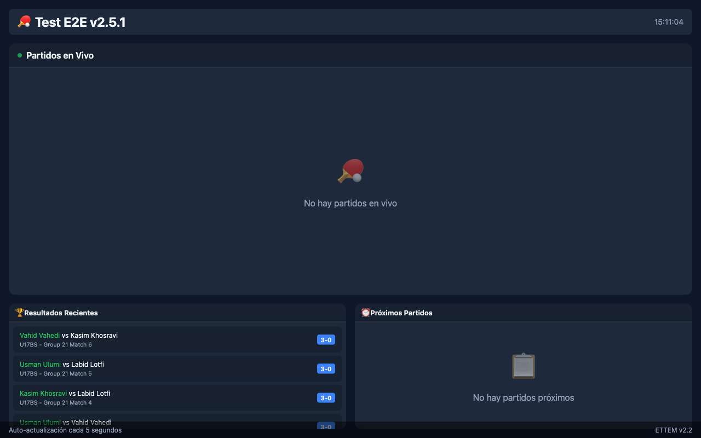

Pantalla Pública
Proyección en tiempo real para el recinto: partidos en curso, resultados recientes y próximos encuentros.
Descripción General
La Pantalla Pública es una vista diseñada para proyectarse en un televisor o pantalla grande en el recinto del torneo. Muestra información en tiempo real para que jugadores, entrenadores y espectadores puedan seguir el torneo sin necesidad de acercarse a la mesa del organizador.

Cómo Acceder
La pantalla pública está disponible en la ruta /display
del servidor de ETTEM. Desde cualquier navegador en la red local:
-
En la computadora principal: abre el navegador y ve a
http://127.0.0.1:8000/display -
Desde otro dispositivo en la misma red: usa la IP local de la computadora,
por ejemplo
http://192.168.1.100:8000/display - Para conectar un televisor o proyector: conecta el dispositivo HDMI a la computadora y abre el navegador en pantalla completa.
Contenido de la Pantalla
La pantalla pública muestra tres secciones principales:
Partidos en Vivo
La sección más destacada muestra los partidos actualmente en curso con el marcador actual (si se usa el marcador de árbitro en modo punto a punto) o el último marcador conocido. Incluye:
- Nombres de los jugadores o equipos.
- Banderas de países.
- Marcador de sets actual.
- Mesa en la que se juega.
- Categoría y ronda (fase de grupos, cuartos, semis, final, etc.).
Resultados Recientes
Muestra los últimos partidos finalizados con el marcador completo (por sets). Esta sección se actualiza tan pronto como se ingresa un resultado en el sistema.
Próximos Partidos
Lista los partidos pendientes según el Scheduler: qué jugadores juegan a continuación y en qué mesa. Permite a los jugadores prepararse con anticipación.
Actualización Automática
La pantalla pública se actualiza automáticamente cada 5 segundos usando JavaScript, sin que nadie tenga que recargar la página. No se requiere ninguna interacción — simplemente déjala proyectada y mostrará siempre la información más reciente.
Diseño y Temas
La pantalla pública usa un tema oscuro optimizado para proyección en pantallas grandes en ambientes con luz ambiente variada:
- Fondo oscuro para reducir el brillo y facilitar la lectura a distancia.
- Tipografía grande y de alto contraste.
- Diseño responsivo optimizado para resoluciones Full HD (1920×1080) y 4K (3840×2160).
- Sin barras de navegación ni elementos de administración — solo la información del torneo.
Rotación Automática
Cuando hay mucha información para mostrar (muchos partidos en curso, muchos resultados), la pantalla pública rota automáticamente entre las secciones de resultados recientes y próximos partidos, asegurando que toda la información relevante sea visible sin necesidad de hacer scroll.
Configuración de Red para el Display
Para acceder a la pantalla pública desde otro dispositivo (televisor con navegador, tablet, etc.) en el mismo recinto:
Encontrar la IP de la computadora
En la computadora que ejecuta ETTEM:
| Sistema Operativo | Comando |
|---|---|
| Windows | Abre el Símbolo del sistema y escribe ipconfig. Busca la línea “Dirección IPv4”. |
| macOS | Abre Terminal y escribe ifconfig | grep inet, o ve a Preferencias del Sistema → Red. |
| Linux | Abre Terminal y escribe ip addr o hostname -I. |
La IP local suele tener la forma 192.168.X.X o 10.0.X.X.
Desde cualquier dispositivo en la misma red Wi-Fi, accede a:
http://<IP-de-la-computadora>:8000/display
Regla en el firewall de Windows
Si otros dispositivos no pueden acceder al display en Windows, es posible que el firewall esté bloqueando el puerto 8000. Para habilitarlo:
- Abre el Panel de Control → Sistema y Seguridad → Firewall de Windows Defender.
- Haz clic en Configuración avanzada.
- En Reglas de entrada, haz clic en Nueva regla.
- Selecciona Puerto, protocolo TCP, puerto específico 8000.
- Selecciona Permitir la conexión y guarda.